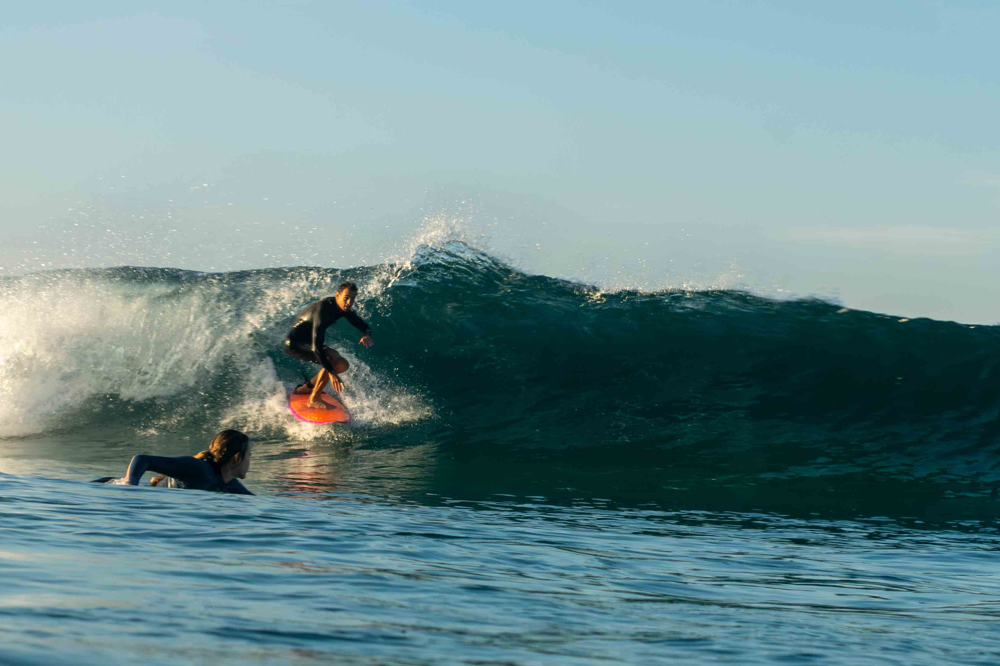
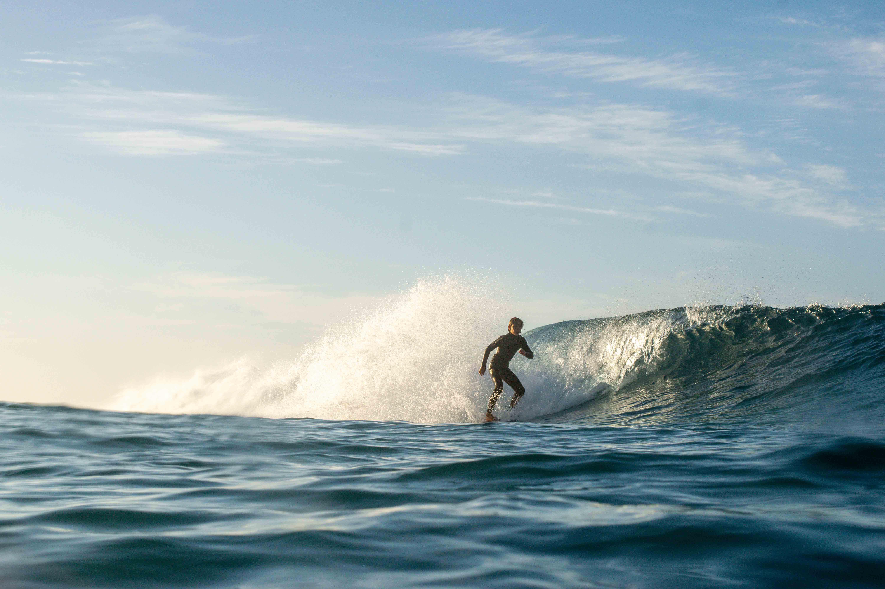
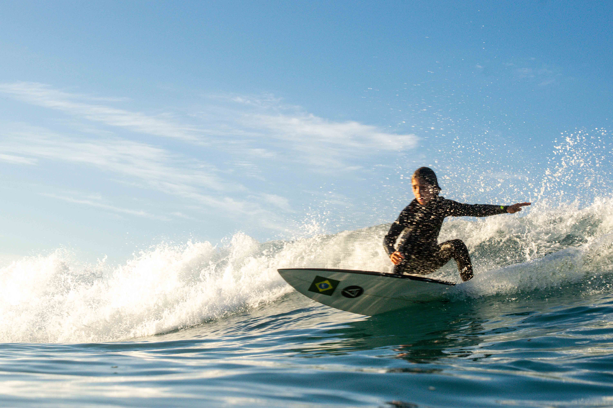

Mantém a ideia de um texto central (familiar ao layout atual), mas com opacidade maior (~42%), contorno/sombra para ler em fundos claros, e selos "salnalente" nos quatro cantos — assim um crop simples não elimina a marca.
Atual (referência)

Proposta B — centro + cantos

